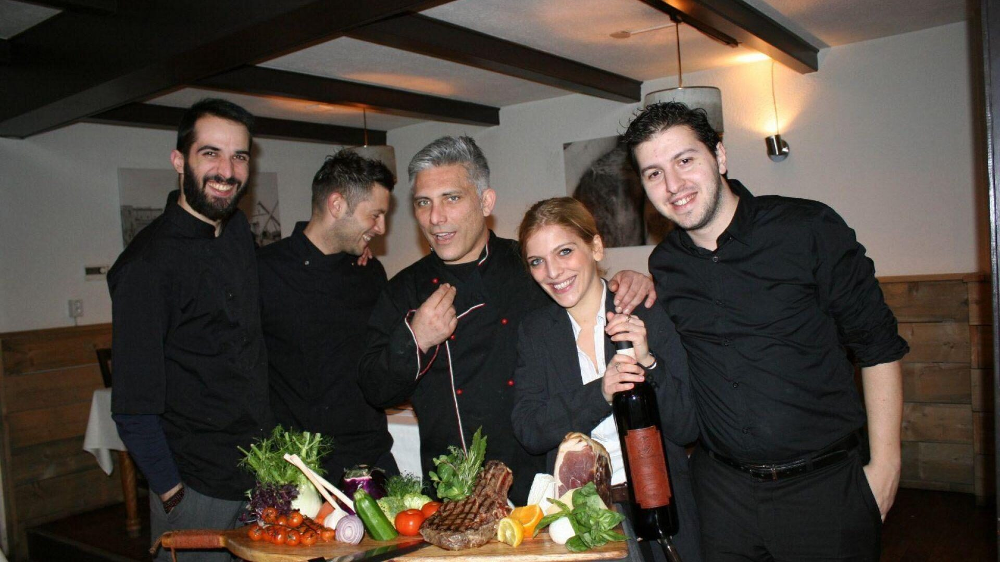

Amore per la cucina siciliana
Als kinderen van Siciliaanse ouders uit Mazara del Vallo kwamen Angela en haar broer Vito al op jonge leeftijd naar Nederland. De liefde voor de Siciliaanse keuken en de tradities die ze van hun ouders meekregen, zijn altijd een belangrijk deel van hun leven gebleven.
Met Va Bene zetten ze die tradities met trots voort. In alle bescheidenheid brengen broer en zus de typische Siciliaanse gastronomie op een verrassende, warme en charmante manier bij u aan tafel, op een van de mooiste plekken van Voorschoten.
In de zomermaanden is het heerlijk vertoeven op het buitenterras, overdag en 's avonds. Wij raden altijd aan om te reserveren, zodat u verzekerd bent van een tafel.
Benvenuti e buon appetito! Angela en Vito Tumbiolo

Tradizione
Traditionele Siciliaanse ingrediënten en gerechten, met wekelijks wisselende vis, vlees en een dagsoep.
Ospitalità italiana
Va Bene draagt het keurmerk "Marchio Ospitalità Italiana - Ristoranti Italiani nel Mondo", voor Italiaanse gastvrijheid en traditionele gastronomie.
In de lijsten
Glamour.nl zette Va Bene op plek 1 van de beste Italiaanse restaurants van Nederland. Ook Harpersbazaar.nl nam ons op in haar lijst.